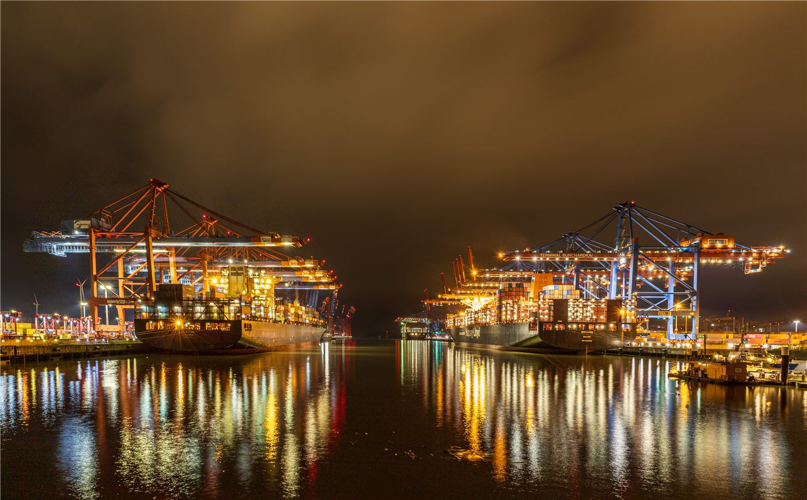

ECFA 통한 대중 수출 ‘사상 최저’… 양안 경제 의존도 변화
양안경제협력기본협정(ECFA)을 통한 대만의 대중국 수출이 사상 최저 수준으로 떨어졌다. 공급망 재편과 수출 다변화 흐름 속에서 양안 경제 관계의 구조가 바뀌고 있다는 신호다.
여년재 기자 · 2026.06.30
橋대만

타이베이타임스(Taipei Times)·자유시보(自由時報)에 따르면 ECFA 조기수확 품목을 통한 대만의 대중국 수출이 협정 발효 이후 가장 낮은 수준으로 줄었다.
광고 문의 · 300×250ECFA는 2010년 발효된 양안 경제협정으로, 일부 품목에 관세 혜택(조기수확)을 부여해 교역을 촉진해 왔다. 이 통로를 통한 수출 감소는 양안 교역 구조의 변화를 보여 준다.
무엇이 줄였나
전문가들은 글로벌 공급망 재편, 대만 기업의 생산 거점 다변화, 그리고 일부 품목의 관세 혜택 축소 등이 복합적으로 작용했다고 본다. 대만은 수출 시장을 동남아·미국 등으로 넓혀 왔다.
대중 수출 비중의 하락은 특정 시장 의존도를 낮춘다는 점에서 위험 분산 효과가 있다. 동시에 거대한 인접 시장의 비중 변화는 산업별로 명암이 갈린다.
산업과 정치의 교차점
ECFA는 경제 협정이지만 양안 관계의 상징적 의제이기도 하다. 교역 구조의 변화는 경제 논리와 정치적 환경이 함께 작용한 결과로 읽힌다.
대만 산업계는 시장 다변화와 고부가가치 전환으로 대응하고 있다. 다만 농수산·전통 제조 등 일부 분야는 대중 시장 변화에 민감해 정책적 보완이 거론된다.
제3의 시각
華橋時報는 양안 경제를 어느 한쪽의 프레임으로 재단하지 않는다. 우리는 교역 통계의 변화를 사실로 전하고, 그것이 대만의 산업과 일자리, 그리고 양안에 걸친 화인 사회의 생활에 갖는 의미를 차분히 살핀다. 숫자의 등락 뒤에는 늘 사람들의 생계가 있다.
출처·참고 (사실 확인용 — 본문은 직접 재작성)
· Taipei Times (taipeitimes.com)
· 自由時報 (ltn.com.tw)
· Taipei Times (taipeitimes.com)
· 自由時報 (ltn.com.tw)